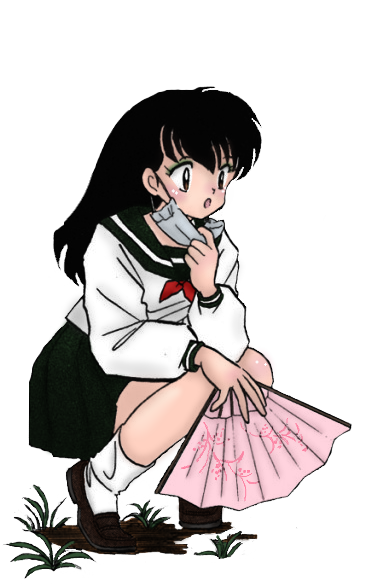

Hello.
I'm PatrinePtn, a fanfic writer since 2013.
I write for Inuyasha fandom.
My favorite character to write about is Kagome Higurashi, Inuyasha's female protagonist. I find her easy to work with in different scenarios, therefore I like putting her in crossovers and write from her perspective in third person limited narrator.
I've worked mostly with crossovers, as I have a passion for imagining impossible situations.